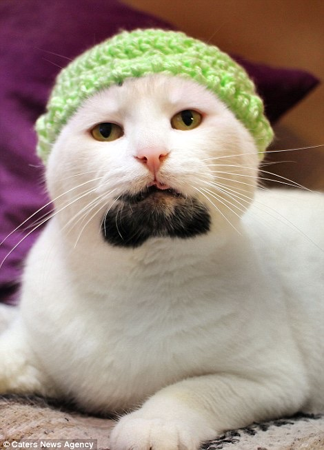

Lab 4- Pseudocoding & Problem Solving
Challenge
Get in the habit of thinking in terms of pseudocoding before jumping into coding
Problems
My biggest issue in this lab was understanding how to add in the comments code
Reflection
This assignment was interesting and did not arise many challenges for me. My partner Lily helped me a lot and I think this was a good result.

Results
Task 1. Pseudocode an everyday Task
//Wash hair thoroughly with shampoo and conditioner, rinse
//Towel dry hair
//Apply heat protectant to hair and comb through
//Using a blow dryer, begin drying hair at the roots around the crown of the head
//Once the roots and crown of the head are 90% dry, switch to a roller dryer brush
//Section the hair in three parts parallel to the crown of the head
//Using a dryer brush, comb through the hair in a downward motion
//Once you reach halfway through the section of hair, twirl the hair in the dryer brush to create a curl.
//Repeat all three sections of hair using the same technique
//Section front pieces of the hair off from other hair
//Using the dryer brush, brush hair down, to the right side, to the left side repeatedly
//Continue brushing through the front pieces and then brush to the back of the head, letting the hair fall down the sides of the head
//Finally, comb through the hair with a small drop of hair oil and style using your fingers.
Task 2. Pseudocode a simple computer game
Exam Counter
1. Obtain Exams from students
2. Print answer sheet
Task 3. Turn Pseudocode into comments
Exam Counter
// initalize pass to zero
// initalize fail to zero
// initalize students to one
// while students counter is less than or equal to ten
// input the next exam results
// if the students passed
// add one to passes counter
// else
// add ones to fails counter
// add one to student counter
// print the number of passes
// print the number of fails